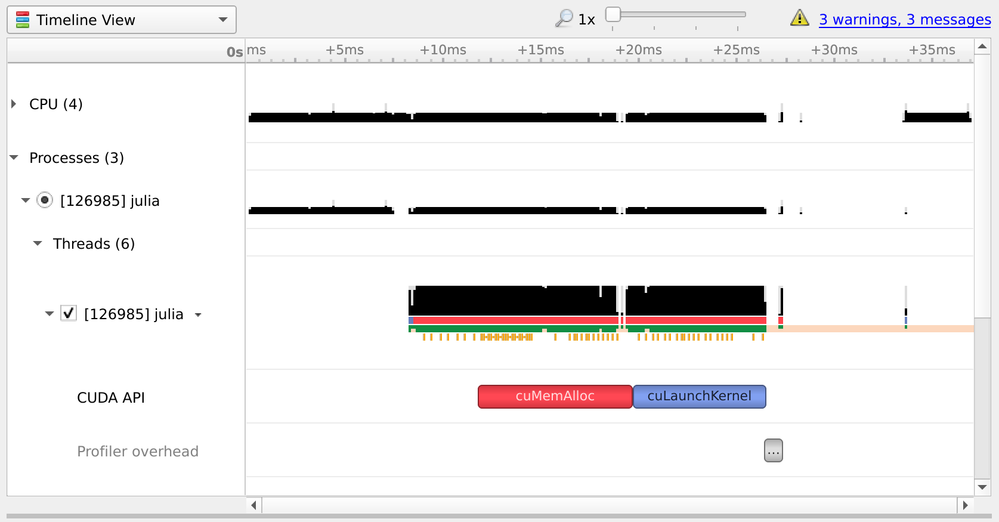
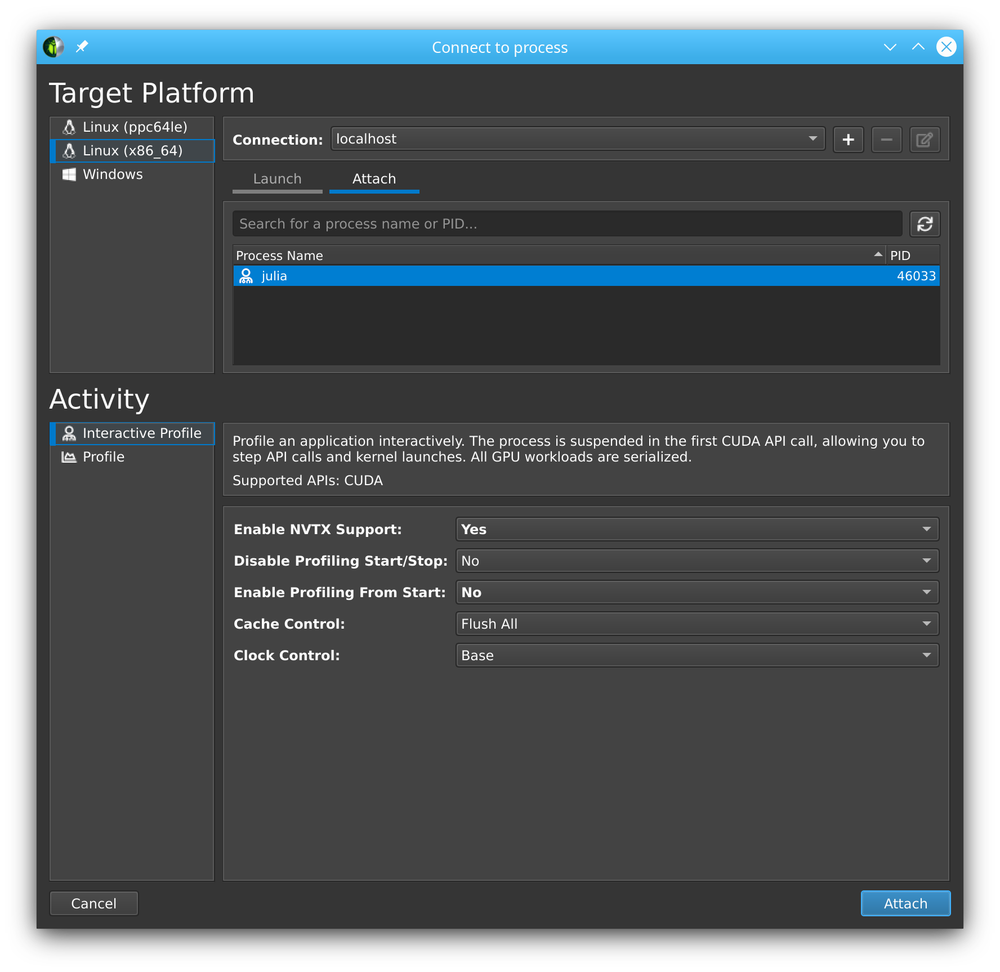
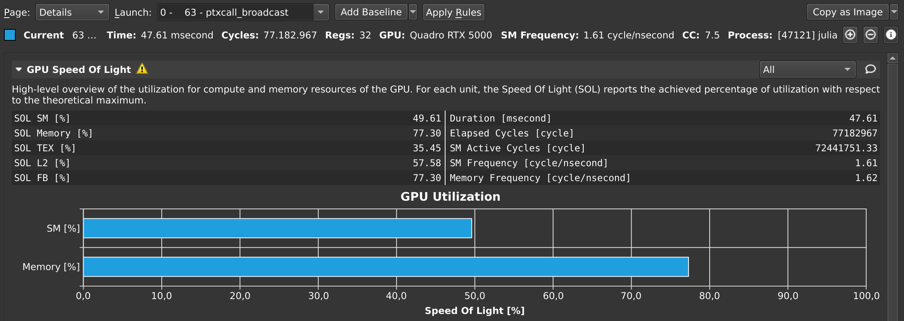
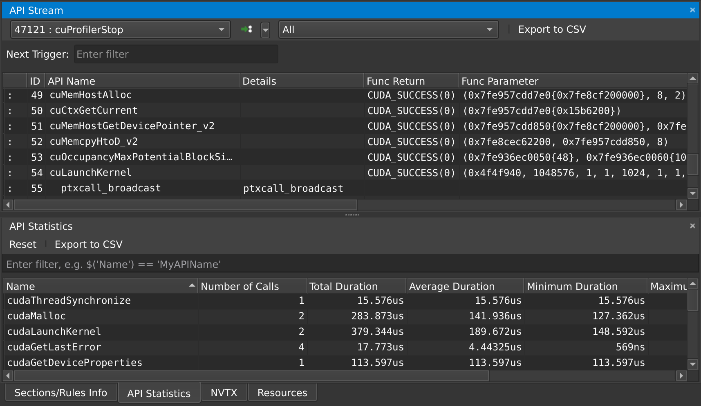

Benchmarking & profiling
Benchmarking and profiling a GPU program is harder than doing the same for a program executing on the CPU. For one, GPU operations typically execute asynchronously, and thus require appropriate synchronization when measuring their execution time. Furthermore, because the program executes on a different processor, it is much harder to know what is currently executing. CUDA, and the Julia CUDA packages, provide several tools and APIs to remedy this.
Time measurements
To accurately measure execution time in the presence of asynchronously-executing GPU operations, CUDA.jl provides an @elapsed macro that, much like Base.@elapsed, measures the total execution time of a block of code on the GPU:
julia> a = CUDA.rand(1024,1024,1024);
julia> Base.@elapsed sin.(a) # WRONG!
0.008714211
julia> CUDA.@elapsed sin.(a)
0.051607586f0This is a low-level utility, and measures time by submitting events to the GPU and measuring the time between them. As such, if the GPU was not idle in the first place, you may not get the expected result. The macro is mainly useful if your application needs to know about the time it took to complete certain GPU operations.
For more convenient time reporting, you can use the CUDA.@time macro which mimics Base.@time by printing execution times as well as memory allocation stats, while making sure the GPU is idle before starting the measurement, as well as waiting for all asynchronous operations to complete:
julia> a = CUDA.rand(1024,1024,1024);
julia> CUDA.@time sin.(a);
0.046063 seconds (96 CPU allocations: 3.750 KiB) (1 GPU allocation: 4.000 GiB, 14.33% gc time of which 99.89% spent allocating)The CUDA.@time macro is more user-friendly and is a generally more useful tool when measuring the end-to-end performance characteristics of a GPU application.
For robust measurements however, it is advised to use the BenchmarkTools.jl package which goes to great lengths to perform accurate measurements. Due to the asynchronous nature of GPUs, you need to ensure the GPU is synchronized at the end of every sample, e.g. by calling synchronize() or, even better, wrapping your code in CUDA.@sync:
julia> a = CUDA.rand(1024,1024,1024);
julia> @benchmark CUDA.@sync sin.($a)
BenchmarkTools.Trial:
memory estimate: 3.73 KiB
allocs estimate: 95
--------------
minimum time: 46.341 ms (0.00% GC)
median time: 133.302 ms (0.50% GC)
mean time: 130.087 ms (0.49% GC)
maximum time: 153.465 ms (0.43% GC)
--------------
samples: 39
evals/sample: 1Note that the allocations as reported by BenchmarkTools are CPU allocations. For the GPU allocation behavior you need to consult CUDA.@time.
Application profiling
For profiling large applications, simple timings are insufficient. Instead, we want a overview of how and when the GPU was active, to avoid times where the device was idle and/or find which kernels needs optimization.
Integrated profiler
Once again, we cannot use CPU utilities to profile GPU programs, as they will only paint a partial picture. Instead, CUDA.jl provides a CUDA.@profile macro that separately reports the time spent on the CPU, and the time spent on the GPU:
julia> a = CUDA.rand(1024,1024,1024);
julia> CUDA.@profile sin.(a)
Profiler ran for 11.93 ms, capturing 8 events.
Host-side activity: calling CUDA APIs took 437.26 µs (3.67% of the trace)
┌──────────┬───────────┬───────┬───────────┬───────────┬───────────┬─────────────────┐
│ Time (%) │ Time │ Calls │ Avg time │ Min time │ Max time │ Name │
├──────────┼───────────┼───────┼───────────┼───────────┼───────────┼─────────────────┤
│ 3.56% │ 424.15 µs │ 1 │ 424.15 µs │ 424.15 µs │ 424.15 µs │ cuLaunchKernel │
│ 0.10% │ 11.92 µs │ 1 │ 11.92 µs │ 11.92 µs │ 11.92 µs │ cuMemAllocAsync │
└──────────┴───────────┴───────┴───────────┴───────────┴───────────┴─────────────────┘
Device-side activity: GPU was busy for 11.48 ms (96.20% of the trace)
┌──────────┬──────────┬───────┬──────────┬──────────┬──────────┬───────────────────────
│ Time (%) │ Time │ Calls │ Avg time │ Min time │ Max time │ Name ⋯
├──────────┼──────────┼───────┼──────────┼──────────┼──────────┼───────────────────────
│ 96.20% │ 11.48 ms │ 1 │ 11.48 ms │ 11.48 ms │ 11.48 ms │ _Z16broadcast_kernel ⋯
└──────────┴──────────┴───────┴──────────┴──────────┴──────────┴───────────────────────By default, CUDA.@profile will provide a summary of host and device activities. If you prefer a chronological view of the events, you can set the trace keyword argument:
julia> CUDA.@profile trace=true sin.(a)
Profiler ran for 11.71 ms, capturing 8 events.
Host-side activity: calling CUDA APIs took 217.68 µs (1.86% of the trace)
┌────┬──────────┬───────────┬─────────────────┬──────────────────────────┐
│ ID │ Start │ Time │ Name │ Details │
├────┼──────────┼───────────┼─────────────────┼──────────────────────────┤
│ 2 │ 7.39 µs │ 14.07 µs │ cuMemAllocAsync │ 4.000 GiB, device memory │
│ 6 │ 29.56 µs │ 202.42 µs │ cuLaunchKernel │ - │
└────┴──────────┴───────────┴─────────────────┴──────────────────────────┘
Device-side activity: GPU was busy for 11.48 ms (98.01% of the trace)
┌────┬──────────┬──────────┬─────────┬────────┬──────┬─────────────────────────────────
│ ID │ Start │ Time │ Threads │ Blocks │ Regs │ Name ⋯
├────┼──────────┼──────────┼─────────┼────────┼──────┼─────────────────────────────────
│ 6 │ 229.6 µs │ 11.48 ms │ 768 │ 284 │ 34 │ _Z16broadcast_kernel15CuKernel ⋯
└────┴──────────┴──────────┴─────────┴────────┴──────┴─────────────────────────────────Here, every call is prefixed with an ID, which can be used to correlate host and device events. For example, here we can see that the host-side cuLaunchKernel call with ID 6 corresponds to the device-side broadcast kernel.
External profilers
If you want more details, or a graphical representation, we recommend using external profilers. To inform those external tools which code needs to be profiled (e.g., to exclude warm-up iterations or other noninteresting elements) you can also use CUDA.@profile to surround interesting code with:
julia> a = CUDA.rand(1024,1024,1024);
julia> sin.(a); # warmup
julia> CUDA.@profile sin.(a);
[ Info: This Julia session is already being profiled; defaulting to the external profiler.
julia>Note that the external profiler is automatically detected, and makes CUDA.@profile switch to a mode where it merely activates an external profiler and does not do perform any profiling itself. In case the detection does not work, this mode can be forcibly activated by passing external=true to CUDA.@profile.
NVIDIA provides two tools for profiling CUDA applications: Nsight Systems and Nsight Compute for respectively timeline profiling and more detailed kernel analysis. Both tools are well-integrated with the Julia GPU packages, and make it possible to iteratively profile without having to restart Julia.
NVIDIA Nsight Systems
Generally speaking, the first external profiler you should use is Nsight Systems, as it will give you a high-level overview of your application's performance characteristics. After downloading and installing the tool (a version might have been installed alongside with the CUDA toolkit, but it is recommended to download and install the latest version from the NVIDIA website), you need to launch Julia from the command-line, wrapped by the nsys utility from Nsight Systems:
$ nsys launch juliaYou can then execute whatever code you want in the REPL, including e.g. loading Revise so that you can modify your application as you go. When you call into code that is wrapped by CUDA.@profile, the profiler will become active and generate a profile output file in the current folder:
julia> using CUDA
julia> a = CUDA.rand(1024,1024,1024);
julia> sin.(a);
julia> CUDA.@profile sin.(a);
start executed
Processing events...
Capturing symbol files...
Saving intermediate "report.qdstrm" file to disk...
Importing [===============================================================100%]
Saved report file to "report.qdrep"
stop executedEven with a warm-up iteration, the first kernel or API call might seem to take significantly longer in the profiler. If you are analyzing short executions, instead of whole applications, repeat the operation twice (optionally separated by a call to synchronize() or wrapping in CUDA.@sync)
You can open the resulting .qdrep file with nsight-sys:

If Nsight Systems does not capture any kernel launch, even though you have used CUDA.@profile, try starting nsys with --trace cuda.
NVIDIA Nsight Compute
If you want details on the execution properties of a single kernel, or inspect API interactions in detail, Nsight Compute is the tool for you. It is again possible to use this profiler with an interactive session of Julia, and debug or profile only those sections of your application that are marked with CUDA.@profile.
First, ensure that all (CUDA) packages that are involved in your application have been precompiled. Otherwise, you'll end up profiling the precompilation process, instead of the process where the actual work happens.
Then, launch Julia under the Nsight Compute CLI tool as follows:
$ ncu --mode=launch juliaYou will get an interactive REPL, where you can execute whatever code you want:
julia> using CUDA
# Julia hangs!As soon as you use CUDA.jl, your Julia process will hang. This is expected, as the tool breaks upon the very first call to the CUDA API, at which point you are expected to launch the Nsight Compute GUI utility, select Interactive Profile under Activity, and attach to the running session by selecting it in the list in the Attach pane:

Note that this even works with remote systems, i.e., you can have Nsight Compute connect over ssh to a remote system where you run Julia under ncu.
Once you've successfully attached to a Julia process, you will see that the tool has stopped execution on the call to cuInit. Now check Profile > Auto Profile to make Nsight Compute gather statistics on our kernels, uncheck Debug > Break On API Error to avoid halting the process when innocuous errors happen, and click Debug > Resume to resume your application.
After doing so, our CLI session comes to life again, and we can execute the rest of our script:
julia> a = CUDA.rand(1024,1024,1024);
julia> sin.(a);
julia> CUDA.@profile sin.(a);Once that's finished, the Nsight Compute GUI window will have plenty details on our kernel:

By default, this only collects a basic set of metrics. If you need more information on a specific kernel, select detailed or full in the Metric Selection pane and re-run your kernels. Note that collecting more metrics is also more expensive, sometimes even requiring multiple executions of your kernel. As such, it is recommended to only collect basic metrics by default, and only detailed or full metrics for kernels of interest.
At any point in time, you can also pause your application from the debug menu, and inspect the API calls that have been made:

Troubleshooting Nsight Compute
If you're running into issues, make sure you're using the same version of Nsight Compute on the host and the device, and make sure it's the latest version available. You do not need administrative permissions to install Nsight Compute, the runfile downloaded from the NVIDIA home page can be executed as a regular user.
Kernel sources only report File not found
When profiling a remote application, Nsight Compute will not be able to find the sources of kernels, and instead show File not found errors in the Source view. Although it is possible to point Nsight Compute to a local version of the remote file, it is recommended to enable "Auto-Resolve Remote Source File" in the global Profile preferences (Tools menu -> Preferences). With that option set to "Yes", clicking the "Resolve" button will automatically download and use the remote version of the requested source file.
Could not load library "libpcre2-8
This is caused by an incompatibility between Julia and Nsight Compute, and should be fixed in the latest versions of Nsight Compute. If it's not possible to upgrade, the following workaround may help:
LD_LIBRARY_PATH=$(/path/to/julia -e 'println(joinpath(Sys.BINDIR, Base.LIBDIR, "julia"))') ncu --mode=launch /path/to/juliaThe Julia process is not listed in the "Attach" tab
Make sure that the port that is used by Nsight Compute (49152 by default) is accessible via ssh. To verify this, you can also try forwarding the port manually:
ssh user@host.com -L 49152:localhost:49152Then, in the "Connect to process" window of Nsight Compute, add a connection to localhost instead of the remote host.
If SSH complains with Address already in use, that means the port is already in use. If you're using VSCode, try closing all instances as VSCode might automatically forward the port when launching Nsight Compute in a terminal within VSCode.
Julia in Nsight Compute only shows the Julia logo, not the REPL prompt
In some versions of Nsight Compute, you might have to start Julia without the --project option and switch the environment from inside Julia.
"Disconnected from the application" once I click "Resume"
Make sure that everything is precompiled before starting Julia with Nsight Compute, otherwise you end up profiling the precompilation process instead of your actual application.
Alternatively, disable auto profiling, resume, wait until the precompilation is finished, and then enable auto profiling again.
I only see the "API Stream" tab and no tab with details on my kernel on the right
Scroll down in the "API Stream" tab and look for errors in the "Details" column. If it says "The user does not have permission to access NVIDIA GPU Performance Counters on the target device", add this config:
# cat /etc/modprobe.d/nvprof.conf
options nvidia NVreg_RestrictProfilingToAdminUsers=0The nvidia.ko kernel module needs to be reloaded after changing this configuration, and your system may require regenerating the initramfs or even a reboot. Refer to your distribution's documentation for details.
Nsight Compute breaks on various API calls
Make sure Break On API Error is disabled in the Debug menu, as CUDA.jl purposefully triggers some API errors as part of its normal operation.
Source-code annotations
If you want to put additional information in the profile, e.g. phases of your application, or expensive CPU operations, you can use the NVTX library via the NVTX.jl package:
using CUDA, NVTX
NVTX.@mark "reached Y"
NVTX.@range "doing X" begin
...
end
NVTX.@annotate function foo()
...
endFor more details, refer to the documentation of the NVTX.jl package.
Compiler options
Some tools, like Nsight Systems Compute, also make it possible to do source-level profiling. CUDA.jl will by default emit the necessary source line information, which you can disable by launching Julia with -g0. Conversely, launching with -g2 will emit additional debug information, which can be useful in combination with tools like cuda-gdb, but might hurt performance or code size.